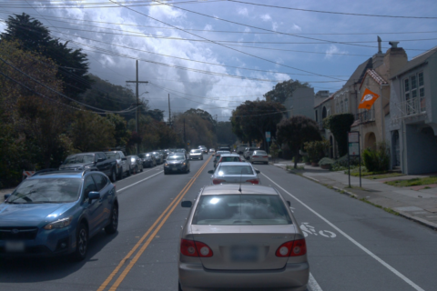
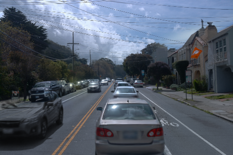
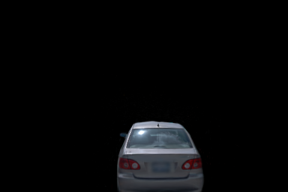
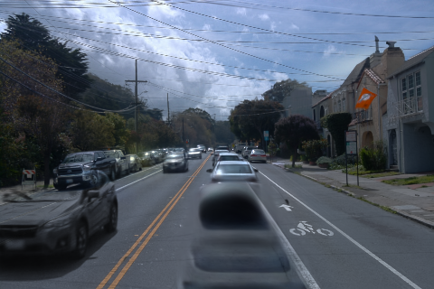

a37 单目标身份重训，正式停在 10k
SCENE008-A37-ONLY-B10K-20261103-R1 · 2026-11-03 · seed0 · 480×320 · 49 个训练视图
动态输入仅 a37fresh 10,000 次更新真实 smoke + 完整恢复GPU 保持开启
这次在输入端确定身份：只将真实 track vBOasuXpjI7h7d-X_VEQdA（a37，原输入 actor_4）登记为动态对象，并重新初始化训练。a6、a5、a26、a18 的 RGB 保留，由原 B 的时间静态 / 背景模型重建。未从旧五车动态权重中临时筛点，也未使用旧权重热启动。
当前交付是按要求训练到 10k 的单目标 B 基线。raw105 删除后仍有明显黑色车形残留，保留车辆也有重建模糊。删除图是原生静态层输出；未叠加 R4 或 a37/a6 道路补丁，新增道路修复更新为 0。输入身份正确和训练指标改善，不代表道路修复已完成。
完整 49 帧：核对动态图及保留车辆
raw105
真实 RGB
单 a37 B · 10k 合成
动态图：a37
仅删除 a37 · 未加道路修复
均为原生 PNG，动态图未再按 a37 掩码裁切。滑动可核查模型本身的外溢与残留。查看该帧动态 alpha
播放全 49 帧视频（10fps，4.9 秒）
单独动态图 · 单独删除结果
保持原 B 设置，在 10k 截止
| 项目 | 实际执行 |
|---|
| 身份输入 | 49 帧仅 a37 的显式二值动态掩码 / 动态 RGB；动态点云只有 1 份、98,452 个真实点。原 actor_4 固定重编号为 actor_0。 |
| 训练与学习率 | 正式从零更新 10,000 次；保留原 B 的 30k 学习率 horizon。在 10k 完整检查点及配套评价发布后退出，未执行 10,001 步。循环配置保留 30000 用于原 LR 公式，不代表执行了 30k。 |
| 保持的训练设置 | seed0、相机 / 时间采样、480×320、所有损失权重、完整掩码内外 alpha 监督、LiDAR 深度衰减、SGCM、NPS、增密与 opacity reset 设置。 |
| 配置差异 | 仅 source_path、model_path 与 followup_scene_spec 中的输入路径 / 单一动态 PLY。有效配置 · 逐项差异和身份合同 |
| 真实 smoke | 3,000 次更新，11.07 分钟（含保存 / 49 帧评价）；新进程逐项核对参数、Adam、RNG、采样器、SGCM、EMA 与运行状态，再完成 2 次更新及下一评价入口。独立计费，未作为正式训练起点。 |
| 正式资源 | 28.84 分钟；CUDA 峰值分配 8.23 GiB，峰值保留 13.80 GiB。正式 10k + smoke 3,000 + 恢复后 2 = 本轮 13,002 次更新。 |
| 原现场 | 原 v41 B 四件权重大小与修改时间核对一致；旧 R4 等结果保留。无 subagent；不关 GPU。 |
训练域与身份验收
以下均为同一 49 个已观测训练视图（BUILD），没有独立测试集或无遮挡道路 GT。原生合成指标：PSNR 30.455 dB，SSIM 0.9364，LPIPS 0.0861。这些指标衡量重建输入图像，不能衡量删除后的道路是否正确。
a37 掩码内动态 alpha 均值 0.988878；掩码外 0.004003。动态图可能有边界外溢，未按输入身份直接假定为零。
| 应保留车辆 | 49 帧可见掩码像素总数 | 该域动态 alpha 均值 | 删 a37 对该域的 RGB MAE |
|---|
| a5 | 121,128 | 0.000098 | 0.000042 |
| a26 | 116,261 | 0.001932 | 0.000531 |
| a18 | 13,107 | 0.009956 | 0.003639 |
| a6 | 45,418 | 0.028949 | 0.009806 |
MAE 采用原生浮点 sRGB 的 [0,1] 标度。可见保留车域的删前后变化用于检查误删，不覆盖原本被 a37 遮住的未知表面，也不证明保留车重建质量完美。完整逐帧数值 · 原生重建指标
与原 B 逐步日志核对，全部 10,000 步的相机 ID、time_shift 和各参数组学习率完全一致。逐步配对核验
初始化另行核验：保留侧仍含 a5 / a26 / a18 / a6 的真实 LiDAR 种子，分别为 1,442 / 1,004 / 151 / 798 个。a6 原场景采样命中 855 个，其中 57 个被原 B 的跨时间 0.1m 距离排除规则去除；本次保持该规则，未将这些点重新注入。种子审计
重新载入正式检查点后，全部 49 帧合成、动态与静态 PNG 相对原生评价的最大 8-bit 差值为 0。三个视频均验证解码为 49 帧。
smoke 下一评价入口曾因 PyTorch mmap 不接受 Path 参数失败；改为字符串后零更新重放通过。旧失败现场保留，未重复 smoke 训练。工程重放记账
检查点、恢复与源码
本地同目录完整权重包：a37_B10k_replay.tar.gz，包含原生 static / dynamic / environment / training_state 四件 10k 状态、正式逐步日志、身份输入、配置及执行脚本。训练 RGB/LiDAR 全量数据与原生 CUDA engine 沿用远端已有环境，未重复复制进包。
权重包清单 · smoke 完整恢复核对 · 实际初始化身份 · 结果与更新次数
远端现场：/root/autodl-tmp/drivingeditor_repro/campaign/scene008_a37_only_B10k_20261103_r1
输入准备 · 原生训练 / 10k 截止 · smoke 与正式队列 · 分层重载验收
human_verdict=null，quality_accepted=false。等待用户看图判断；没有替用户填写通过结论。